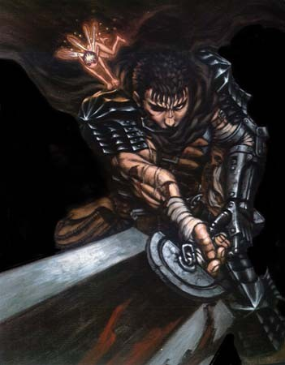
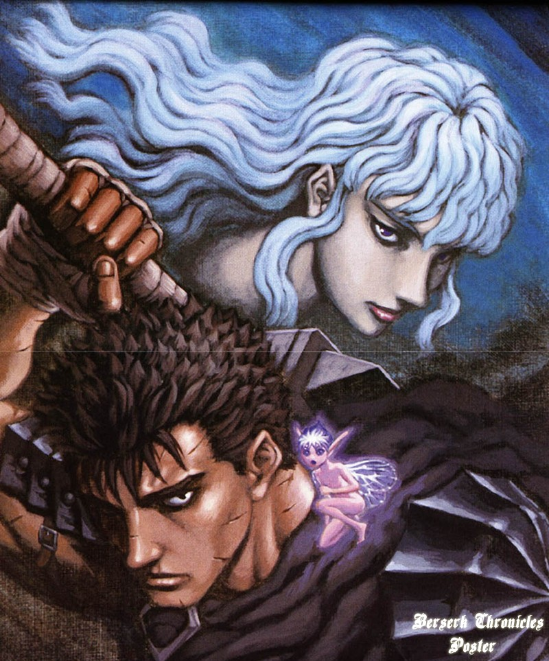
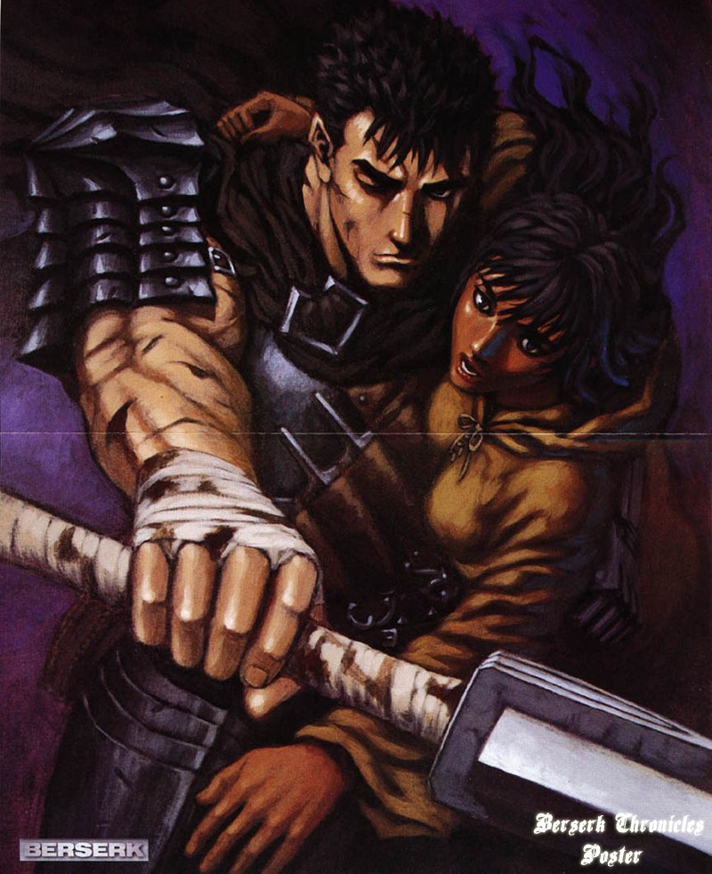
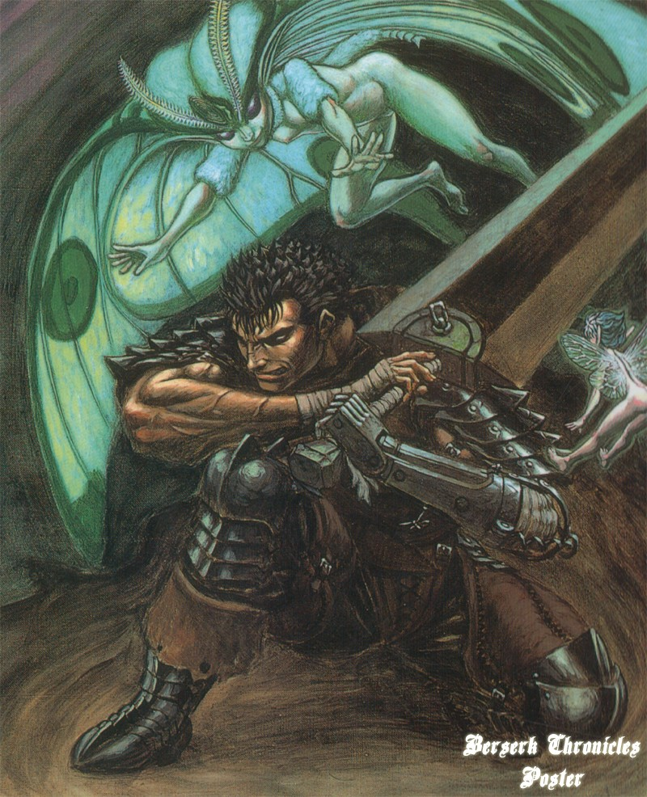
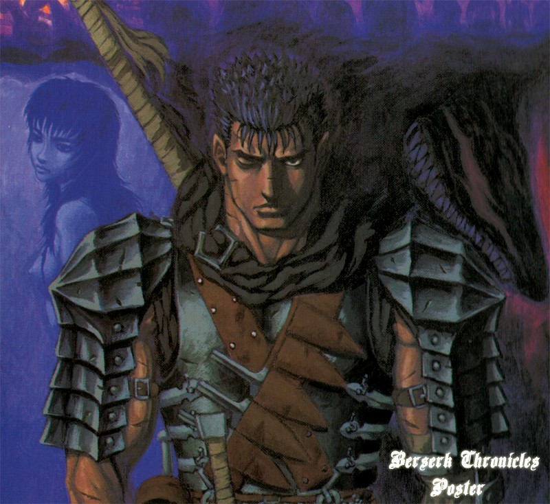
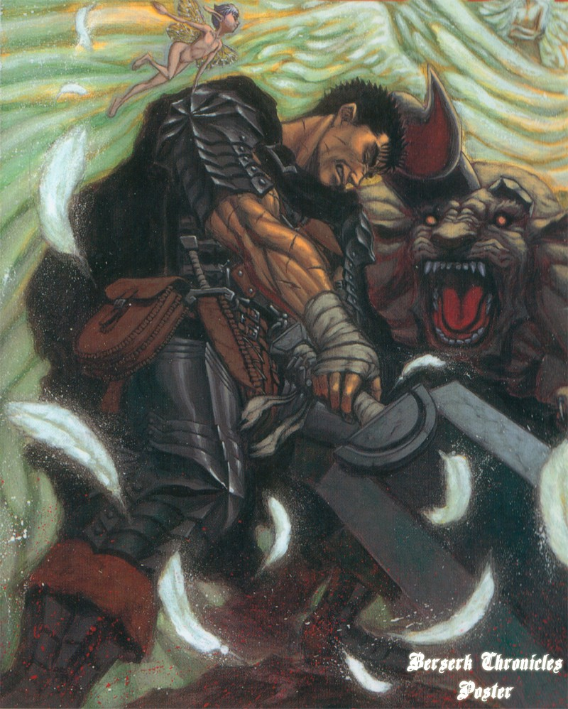
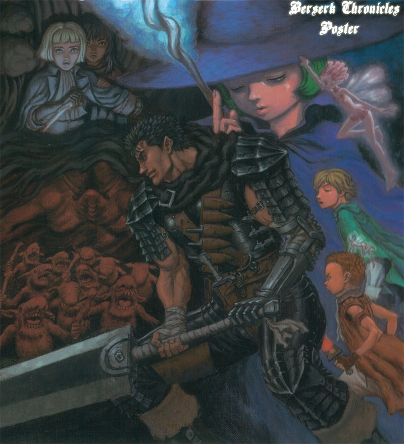
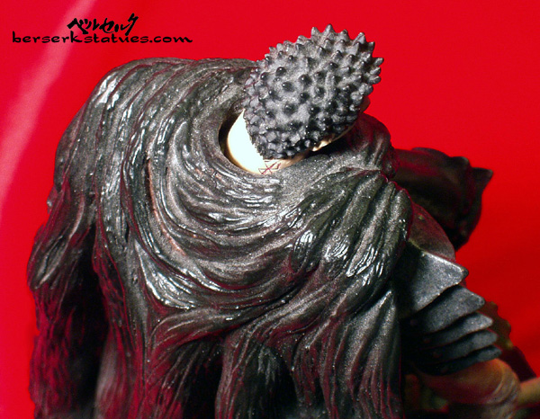
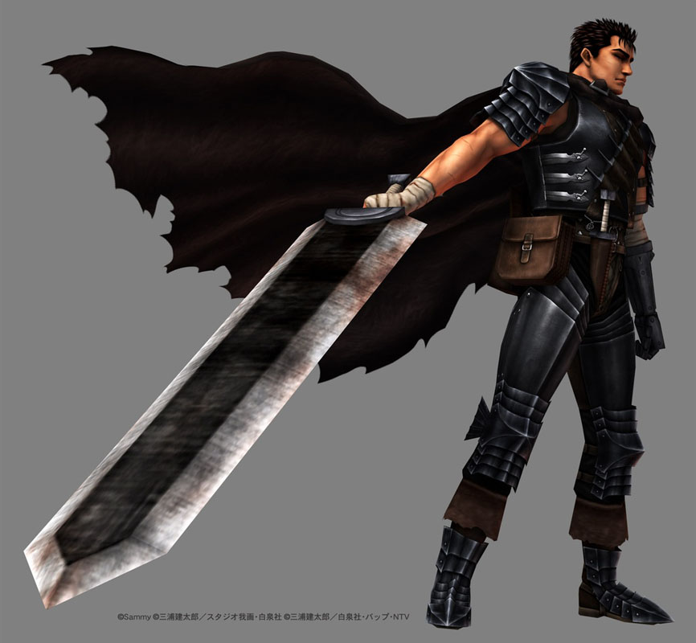
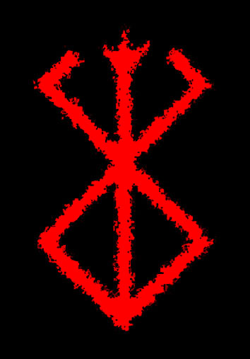

HEADLONG - GUTS: BLACK SWORDSMAN BACKGROUND INFO
Hi John,
It's really late right now (3:30am) and I'm running a bit late for my plane flight. So I might sound disoriented when writing this. =P
So GUTS, is the main character of the story. He's also my favorite character. He only has one eye and one real arm (his left arm was cut off around the elbow in a fight, but has a mechanical arm forged by the same blacksmith that created his sword).
He has plenty of scars all over his body and face, but the one that has significant meaning is the scar that goes horizontal across his nose (you can pretty much see it in all the pictures). If you could paint in scars (or even give him some scars by using a razor or something and cut small slits in the kit, or something i dunno =P) that would be cool. The scar on his nose, though, should have already been sculpted in by HEADLONG.
He also has this BRAND on the back right of his neck. I'm not sure if HEADLONG even sculpted it, because it's possible that the sword over his shoulder is blocking it. There are some pictures of the brand and the location of it at the bottom of this page. IF indeed, the brand is sculpted in and it shows, it would be nice you painted blood seeping out of it (the brand is red in color as well). Whenever evil beings are close to Guts, the brand bleeds.
One last thing to mention is the gigantic sword. It's known as the Dragon Slayer, and if you notice, the middle part of the blade is darker color than the rest of the blade. This is pretty important as it's sort of the trademark of the sword's appearance. Please make sure to color the middle part of the sword darker than the rest. And in general, the sword is very important so if you could make sure to paint the sword with extreme detail, I'll be VERY GRATEFUL. Thanks =).
Also, just as the name of the kit suggests, Guts is known as the Black Swordsman, so generally, his armor is blackish. His cape is also black, etc etc.
As for the character himself, Gut is a human, but because he has killed SO MANY demons and evil beings, his sword is becoming possessed, which also affects him when he fights. He's a struggler, trying to fight his destiny, save his love, and get revenge on the one responsible for everything (sounds typical, but the story is actually VERY intricate).
Ok, I'm sorry I have to cut this short, but I really have to go now. I can't miss this flight. THANK YOU and I will keep in touch via EMAIL. Please send in progress pics when you can. Talk to you later!
Derek
